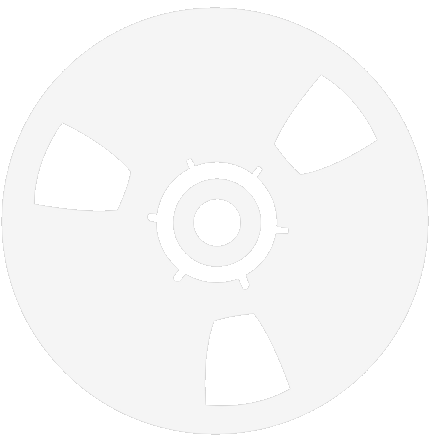

| |
Audio Reproducer Calibration Tape 
We are currently developing 15ips 250nWB/m calibration tapes on 7-inch reels. To place an order, please send us a message.
Click here to see the datasheet.
|
| |
Custom Cassettes
We manufacture high-quality custom cassettes, complete with personalized J-cards and full-color printing. Contact us for more details on placing an order and pricing.
Contact us here for more information.
|
| |
Reel-to-Reel Repairs 
At Quarrybank, we specialize in repairing and restoring reel-to-reel tape recorders, with a focus on ones from Otari. Thanks to our connections with Otari in Japan, we can source parts and access old schematics. Our team is skilled in diagnosing and fixing mechanical and electrical issues, using premium parts to ensure top performance.
Contact us here for inquiries and pricing.
|
©2025 Quarrybank Media Production. All rights reserved.
Quarrybank and the wave logo are NOT registered trademarks of Quarrybank Media Production and/or its subsidiaries. Questions? Comments? Send us e-mail here.
If you experience any problems with this service, please contact the webmaster.
|